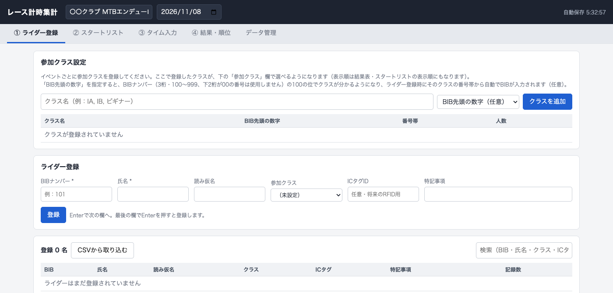
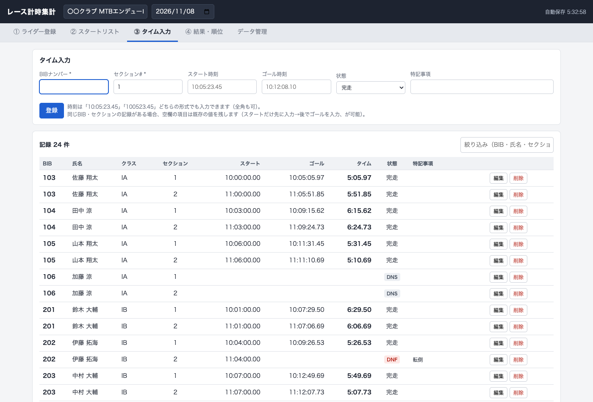

レース計時集計 操作マニュアル
STEP 1
事前準備

起動直後の画面。大会名と開催日を入力したところ
- index.html をダブルクリックして開く（Chrome / Edge 推奨）。インストール・インターネット接続は不要。
- 画面いちばん上の濃紺のバーで「大会名」「開催日」を入力する。あとからいつでも変更できる。
- 入力したデータはブラウザに自動保存される（右上に保存時刻が出る）。ただし ブラウザの履歴・サイトデータを消すと消えてしまう ので、大会の前後は必ずバックアップを書き出す（STEP 6）。
- 動作確認だけしたい場合は、データ管理タブの「サンプルデータを入れる」で12名分のダミーデータが入る。
当日の持ち物・端末の配置（受付／スタート／計測ポイント／本部）は、大会ごとに別途メモしておくと安心です。
レース計時集計 操作マニュアル
STEP 4
③ タイム入力（計測）

タイム入力フォームと記録一覧
- BIBナンバー・セクション#・スタート時刻・ゴール時刻・状態（完走／DNF／DNS／DSQ）を入力して登録する。
- 時刻は
10:05:23.45 と 100523.45 のどちらの形式でも入力できる（全角数字も可）。
- スタートとゴールは別々に入力してよい（先にスタートだけ記録→あとでゴールを追記、が可能）。同じBIB・セクションに再入力した場合、空欄の項目は既存の値を残す。
- 完走できなかった場合は状態をDNF／DNS／DSQに変更し、必要なら特記事項（転倒など）を記録する。
入力するたびに④結果・順位がリアルタイムに更新されるので、都度の確認にも使えます。